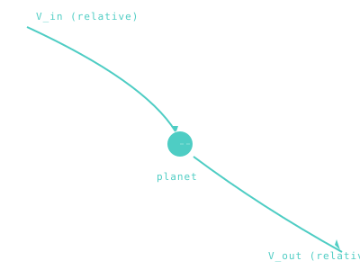

Gravity Assist
Steal a planet's orbital momentum on a flyby — the closest thing in space to a free lunch.

101 · zoom in
Throw a tennis ball at a moving train. The ball bounces off the front and comes back at you faster than you threw it — because the train was moving toward it, and the train's speed got added to the bounce. That, basically, is a gravity assist. The spacecraft is the tennis ball, the planet is the train, and "bouncing" is replaced by "falling past on a hyperbola."
From the planet's point of view, the spacecraft enters and leaves at exactly the same speed — gravity is conservative, no energy gained or lost. But from the Sun's point of view, the spacecraft inherits some of the planet's orbital motion on the way out and arrives somewhere new with extra (or less) speed. It's not a violation of physics; the planet pays for it by slowing down — by an amount way too tiny to detect.
This is the trick that built the Voyager grand tour. Without gravity assists, you can't reach Saturn, let alone Uranus or Neptune, with chemical rockets — the fuel cost is astronomical. Voyager 2 chained four assists in a row: Jupiter, Saturn, Uranus, Neptune, all in one trip. Cassini bounced off Venus twice and Earth once on the way to Saturn. The outer solar system is only accessible because of this trick.
Approach a moving planet from behind on a hyperbolic trajectory. The planet's gravity bends your path, you swing past, and you leave with the same speed relative to the planet — but the planet was moving the whole time, and you carry that motion with you. Net result: you exit with more speed relative to the Sun than you arrived with. The planet, in exchange, slows by an immeasurably tiny amount.
Reverse the geometry — approach from in front — and you slow down. Pioneer 11 used Jupiter to push toward Saturn. Voyager 2 chained Jupiter, Saturn, Uranus, Neptune in one of the most exquisite gravity-assist tours ever flown. Cassini bounced off Venus twice and Earth once before reaching Saturn. New Horizons hit Jupiter to shave three years off the trip to Pluto.
Without gravity assists, half the missions in Orrery's catalogue couldn't have flown. The outer planets are simply too far for direct trajectories with chemical rockets — their costs in `∆v` would exceed what any rocket can deliver. Gravity assists turn that arithmetic from impossible into hard but doable.
SEE IN THE APP
- /missions Voyager 2 and Cassini chained gravity assists across the outer solar system